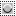

To access these tools, select → from the main menu.
Selection tools are designed to select regions from the active layer so you can work on them without affecting the unselected areas. Each tool has its own individual properties, but the selection tools also share a number of options and features in common. These common features are described here; the variations are explained in the following sections for each tool specifically. If you need help with what a “selection” is in GIMP, and how it works, see Selection.
This category includes the following tools:
-
the Rectangle Select;
-
the Ellipse Select;
-
the Foreground Select;
-
the By Color Select and
In some ways the Path tool can also be thought of as a selection tool: any closed path can be converted into a selection. It also can do a great deal more, though, and does not share the same set of options with the other selection tools.
The behavior of selection tools is modified if you hold down the Ctrl, Shift, and/or Alt keys while you use them.
![[Note]](images/note.png)
|
Note |
|---|---|
|
Advanced users find the modifier keys very valuable, but novice users often find them confusing. Fortunately, it is possible for most purposes to use the Mode buttons (described below) instead of modifier keys. |
- Ctrl
-
When creating a selection, holding down the Ctrl key can have two different actions according to the way you use it:
-
Holding down the key while drawing the selection toggles the “Expand from center” option.
-
If you hold down the Ctrl key before drawing a selection, this new selection switches to the Subtract mode. So, this new selection will be subtracted from an existing one as soon as you release the click, as far as they have common pixels.
-
- Alt
-
Holding Alt will allow movement of the current selection (only its frame, not its content). If the whole image is moved instead of the selection only, try Shift+Alt. Note that the Alt key is sometimes intercepted by the windowing system (meaning that GIMP never knows that it was pressed), so this may not work for everybody.
- Shift
-
When creating a selection, holding down the Shift key can have two different actions according to the way you use it:
-
If you hold down the key before clicking to start the selection, this selection will be in Addition mode as long as you press the key.
-
If you hold down the Shift key after clicking to start the selection, the effect will depend on the tool you are using: for example, the selection will be a square with the Rectangle Select tool.
-
- Ctrl+Shift
-
Using Ctrl+Shift together can do a variety of things, depending on which tool is used. Common to all selection tools is that the selection mode will be switched to intersection, so that after the operation is finished, the selection will consist of the intersection of the region traced out with the pre-existing selection. It is an exercise for the reader to play with the various combinations available when performing selections while holding Ctrl+Shift and releasing either both or either prior to releasing the mouse .
- Key modifiers to move selections
-
Ctrl+Alt+ and Shift+Alt+ are used to move selections. See Section 2.1, “Moving or Resizing a Selection”.
- Space bar
-
Pressing the Space bar while using a selection tool transforms this tool into the Navigation cross as long as you press the bar, allowing you to pan around the image instead of using the scroll-bars when your image is bigger than the canvas. This is the default option: in the Image Windows preferences you can toggle the Space bar to the Move tool.
Here we describe the tool options that apply to all selection tools: options that apply only to some tools, or that affect each tool differently, are described in the sections devoted to the individual tools. The current settings for these options can be seen in the Tool Options dialog, which you should always have visible when you are using tools. To make the interface consistent, the same options are presented for all selection tools, even though some of them don't have any effect for some of the tools.
- Mode
-
This determines the way that the selection you create is combined with any pre-existing selection. Note that the functions performed by these buttons can be duplicated using modifier keys, as described above. For the most part, advanced users use the modifier keys; novice users find the mode buttons easier.
-

Replace -
Replace mode will cause any existing selection to be destroyed or replaced when the new selection is created.
- Add
-
Add mode will cause the new selection to be added to any existing selection regions.
- Subtract
-
Subtract mode will remove the new selection area from any existing selection regions.
-
 Intersect
Intersect
-
Intersection mode will make a new selection from the area where the existing selection region and the new selection region overlap.
-
- Antialiasing
-
This option only affects some selection tools: it causes the boundary of the selection to be drawn more smoothly.
- Feather Edges
-
This options allows the boundary of the selection to be blurred, so that points near the boundary are only partially selected. For further information regarding feathering, see the glossary entry Feathering.
When this option is checked, a Radius option appears. Default value is 10 pixels: higher image resolution, higher radius.